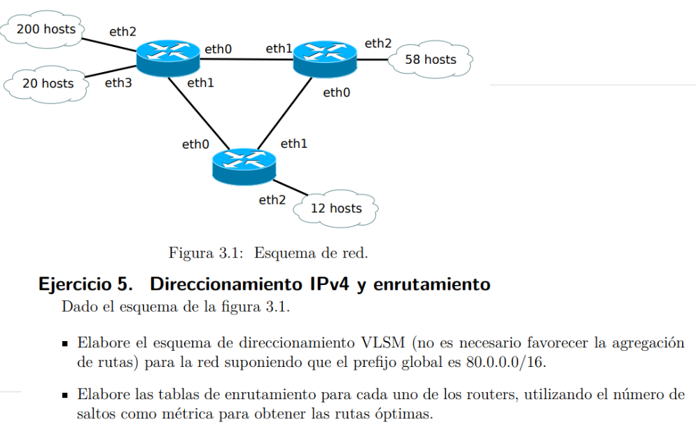

Solución - Direccionamiento IPv4 y Enrutamiento

Esquema de Direccionamiento IPv4 con VLSM
| Red |
Hosts |
Tamaño del Bloque |
Dirección de Red |
Máscara de Subred |
Dirección de Broadcast |
| Red 1 (200 hosts) |
200(+2) |
28 = 256 | /24 |
80.0.0.0 |
255.255.255.0 |
80.0.0.255 |
| Red 2 (58 hosts) |
58(+2) |
26 = 64 | /26 |
80.0.1.0 |
255.255.255.192 |
80.0.1.63 |
| Red 3 (20 hosts) |
20(+2) |
25 = 32 | /27 |
80.0.1.64 |
255.255.255.224 |
80.0.1.95 |
| Red 4 (12 hosts) |
12(+2) |
24 = 16 | /28 |
80.0.1.96 |
255.255.255.240 |
80.0.1.111 |
Tablas de Enrutamiento
Router 1
| Red Destino |
Máscara |
Next Hop | Próximo Salto |
Métrica (Saltos) |
| 80.0.1.0 |
/26 |
Router 2 |
1 |
| 80.0.1.64 |
/27 |
Router 3 |
2 |
| 80.0.1.96 |
/28 |
Router 3 |
2 |
Router 2
| Red Destino |
Máscara |
Next Hop | Próximo Salto |
Métrica (Saltos) |
| 80.0.0.0 |
/24 |
Router 1 |
1 |
| 80.0.1.64 |
/27 |
Router 3 |
1 |
| 80.0.1.96 |
/28 |
Router 3 |
1 |
Router 3
| Red Destino |
Máscara |
Next Hop | Próximo Salto |
Métrica (Saltos) |
| 80.0.0.0 |
/24 |
Router 1 |
2 |
| 80.0.1.0 |
/26 |
Router 2 |
1 |